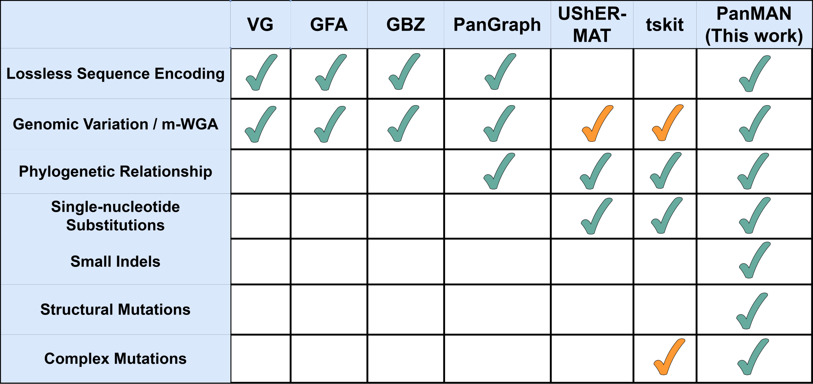
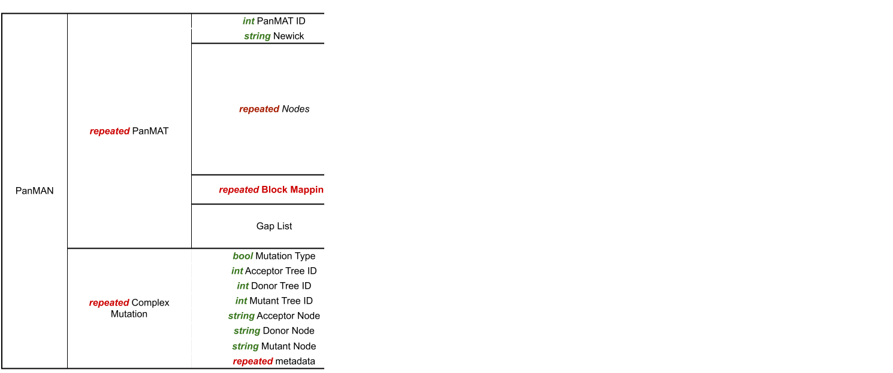

Welcome to PanMAN Wiki
What are PanMANs?
PanMAN or Pangenome Mutation-Annotated Network is a novel data representation for pangenomes that provides massive leaps in both representative power and storage efficiency. Specifically, PanMANs are composed of mutation-annotated trees, called PanMATs, which, in addition to substitutions, also annotate inferred indels (Fig. 2b), and even structural mutations (Fig. 2a) on the different branches. Multiple PanMATs are connected in the form of a network using edges to generate a PanMAN (Fig. 2c). PanMAN's representative power is compared against existing pangenomic formats in Fig. 1. PanMANs are the most compressible pangenomic format for the different microbial datasets (SARS-CoV-2, RSV, HIV, Mycobacterium. Tuberculosis, E. Coli, and Klebsiella pneumoniae), providing 2.9 to 559-fold compression over standard pangenomic formats.

Figure 1: Comparison of representative power of PanMAN against other pangenomic formats (yellow ticks indicate partial representative ability)

Figure 2: Overview of the PanMAN data structure
PanMAN's Protocol Buffer file format
PanMAN utilizes Google’s protocol buffer (protobuf, https://protobuf.dev/), a binary serialization file format, to compactly store PanMAN's data structure in a file. Fig. 3 provides the .proto file defining the PanMAN’s structure. At the top level, the file format of PanMANs encodes a list (declared as a repeated identifier in the .protof file) of PanMATs. Each PanMAT object stores the following data elements: (a) a unique identifier, (b) a phylogenetic tree stored as a string in Newick format, (c) a list of mutations on each branch ordered according to the pre-order traversal of the tree topology, (d) a block mapping object to record homologous segments identified as duplications and rearrangements, which are mapped against their common consensus sequence; the block-mapping object is also used to derive the pseudo-root, e) a gap list to store the position and length of gaps corresponding to each block's consensus sequence. Each mutation object encodes the node's block and nucleotide mutations that are inferred on the branches leading to that node. If a block mutation exists at a position described by the Block-ID field (int32), the block mutation field (bool) is set to 1, otherwise set to 0, and its type is stored as a substitution to and from a gap in Block mutation type field (bool), encoded as 0 or 1, respectively. In PanMAN, each nucleotide mutation within a block inferred on a branch has four pieces of information, i.e., position (middle coordinate), gap position (last coordinate), mutation type, and mutated characters. To reduce redundancy in the file, consecutive mutations of the same type are packed together and stored as a mutation info (int32) field, where mutation type, mutation length, and mutated characters use 3, 5, and 24 bits, respectively. PanMAN stores each character using one-hot encoding, hence, one "Nucleotide Mutations" object can store up to 6 consecutive mutations of the same type. PanMAN's file also stores the complex mutation object to encode the type of complex mutation and its metadata such as PanMATs' and nodes' identifiers, breakpoint coordinates, etc. The entire file is then compressed using XZ (https://github.com/tukaani-project/xz) to enhance storage efficiency.

Figure 3: PanMAN's file format
panmanUtils
panmanUtils includes multiple algorithms to construct PanMANs and to support various functionalities to modify and extract useful information from PanMANs (Fig. 4).

Figure 4: Overview of panmanUtils' functionalities
panmanUtils Video Tutorial
TBA
Installation
panmanUtils can be installed using two different options, as described below:
1. Installation script
2. Docker
Installation Scripts
Docker
docker run -it swalia14/panman:latest
# Inside the docker container
git clone https://github.com/TurakhiaLab/panman.git
cd panman/install
./installationUbuntu.sh
Construction of PanMANs using panmanUtils
Since PanMAN can be composed of a single or multiple PanMATs, to construct a PanMAN, we start with a single tree PanMAN (or PanMAT) and then split it up into a network of multiple PanMATs using the inferred complex mutations provided as input. To construct the starting single-tree PanMAN representing a collection of sequences, panmanUtils require two inputs:
1. Tree topology representing the phylogenetic relationship of the input sequences
2. A pangenomic data structure - PanGraph(Recommended, see below)/GFA/FASTA, representing the multiple-sequence alignment (MSA) corresponding to the sequence collection.
- Example syntax and Usage
Construct PanGraph (JSON format) and tree topology (Newick format) from raw genome sequences using PanGraph toolConstruct single tree PanMAN using PanGraph as input$ ./pangraph build -k mmseqs -a α -b β <path to input raw sequences in FASTA format> | ./pangraph polishSimilarly, if you'd like to construct a PanMAN using a GFA or an MSA as an input, use the$ ./panmanUtils --pangraph-in=<path to PanGraph JSON file> --newick-in=<path to newick file> --output-file=<prefix of panman's file name>--gfa-inor the--msa-inoptions instead of--pangraph-in.NOTE: Currently, we only support GFAv1.1 consisting of Segments, un-overlapping Links and Paths.
Functionalities in panmanUtils
All panmanUtils functionality commands manipulate the input PanMAN file.
Specific options:
-I [ --input-panman ] arg Input PanMAN file path
-P [ --input-pangraph ] arg Input PanGraph JSON file to build a PanMAN
-G [ --input-gfa ] arg Input GFA file to build a PanMAN
-M [ --input-msa ] arg Input MSA file (FASTA format) to build a PanMAN
-N [ --input-newick ] arg Input tree topology as Newick string
-s [ --summary ] Print PanMAN summary
-t [ --newick ] Print newick string of all trees in a PanMAN
-f [ --fasta ] Print tip/internal sequences (FASTA format)
-m [ --fasta-aligned ] Print MSA of sequences for each PanMAT in a PanMAN (FASTA format)
-b [ --subnet ] Extract subnet of given PanMAN to a new PanMAN
file based on the list of nodes provided in the
input-file
-v [ --vcf ] Print variations of all sequences from any PanMAT
in a PanMAN (VCF format)
-g [ --gfa ] Convert any PanMAT in a PanMAN to a GFA file
-w [ --maf ] Print m-WGA for each PanMAT in a PanMAN (MAF
format)
-a [ --annotate ] Annotate nodes of the input PanMAN based on the
list provided in the input-file
-r [ --reroot ] Reroot a PanMAT in a PanMAN based on the input
sequence id (--reference)
-v [ --aa-translation ] Extract amino acid translations in tsv file
-e [ --extended-newick ] Print PanMAN's network in extended-newick format
-k [ --create-network ] Create PanMAN with network of trees from single
or multiple PanMAN files
-p [ --printMutations ] Create PanMAN with network of trees from single
or multiple PanMAN files
-q [ --acr ] ACR method [fitch(default), mppa]
-n [ --reference ] arg Identifier of reference sequence for PanMAN
construction (optional), VCF extract (required),
or reroot (required)
-s [ --start ] arg Start coordinate of protein translation
-e [ --end ] arg End coordinate of protein translation
-d [ --treeID ] arg Tree ID, required for --vcf
-i [ --input-file ] arg Path to the input file, required for --subnet,
--annotate, and --create-network
-o [ --output-file ] arg Prefix of the output file name
NOTE: When output-file argument is optional and is not provided to panmanUtils, the output will be printed in the terminal.
Summary extract
The summary feature extracts node and tree level statistics of a PanMAN, that contains a summary of its geometric and parsimony information.
- Example syntax and Usage
Newick extract
Extract Newick string of all trees in a PanMAN.
- Example syntax and Usage
Extended Newick extract
Extract network in Extended Newick format.
- Example syntax and Usage
Tip/internal node sequences extract
Extract tip and internal node sequences from a PanMAN in a FASTA format.
- Example syntax and Usage
Multiple Sequence Alignment (MSA) extract
Extract MSA of sequences for each PanMAT (with pseduo-root coordinates) in a PanMAN in a FASTA format.
- Example syntax and Usage
Multiple Whole Genome Alignment (m-WGA) extract
Extract m-WGA for each PanMAT in a PanMAN in the form of a UCSC multiple alignment format (MAF).
- Example syntax and Usage
Variant Call Format (VCF) extract
Extract variations of all sequences from any PanMAT in a PanMAN in the form of a VCF file with respect to any reference sequence (ref) in the PanMAT.
- Example syntax and Usage
Graphical fragment assembly (GFA) extract
Convert any PanMAT in a PanMAN to a Graphical fragment assembly (GFA) file representing the pangenome.
- Example syntax and Usage
Subnetwork extract
Extract a subnetwork from a given PanMAN and write it to a new PanMAN file based on the list of nodes provided in the input-file.
- Example syntax and Usage
Annotate
Annotate nodes in a PanMAN with a custom string, later searched by these annotations, using an input TSV file containing a list of nodes and their corresponding custom annotations.
- Example syntax and Usage
$ ./panmanUtils -I <path to PanMAN file> --annotate <path to file containing list of annotations> --output-file=ecoli_10_annotate$ ./panmanUtils -I ecoli_10.panman --annotate --input-file=annotations.tsv --output-file=ecoli_10_annotateNOTE: If output-file is not provided to panmanUtils, the annotated PanMAN will be written to the same file.
Amino Acid Translation
Extract amino acid translations from a PanMAN in TSV file.
- Example syntax and Usage
Contributions
We welcome contributions from the community to enhance the capabilities of PanMAN and panmanUtils. If you encounter any issues or have suggestions for improvement, please open an issue on PanMAN GitHub page. For general inquiries and support, reach out to our team.
Citing PanMAN
If you use the PanMANs or panmanUtils in your research or publications, we kindly request that you cite the following paper:
* Sumit Walia, Harsh Motwani, Kyle Smith, Russell Corbett-Detig, Yatish Turakhia, "Compressive Pangenomics Using Mutation-Annotated Networks", bioRxiv 2024.07.02.601807; doi: 10.1101/2024.07.02.601807